|
В. И. ЕЛИСЕЕВ ВВЕДЕНИЕ В МЕТОДЫ ТЕОРИИ
ФУНКЦИЙ ПРОСТРАНСТВЕННОГО КОМПЛЕКСНОГО ПЕРЕМЕННОГО |
|
8.6 Система уравнений для расчета глюонного поля.
Кварки определены комбинациями изолированных направлений в комплексном пространстве, которые являются составляющими глюонного поля.
Раскрывая систему изолированных направлений получим
|
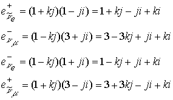 |
(8.6) |
Таким образом, любое зарядовое сопряжение представляет сумму из произведений единичных направлений в комплексном пространстве на весовые коэффициенты. Согласно этой системе зарядовых сопряжений каждая микрочастица характеризуется своей пространственной решеткой из направлений с весовыми коэффициентами. Энергия частицы распределяется по этим направлениям решетки, создавая искривления пространства.
Для исходных кварков u, d имеем согласно этой системе комбинацию глюонных направлений
|
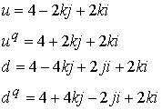 |
(8.7) |
Равнозначные кварковые комбинации заряженного пиона 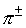и нейтрального пиона 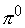служат проверкой системы
|
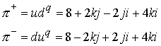 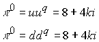 |
(8.8) |
Из (8.8) следует, что нейтральный заряд 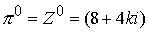входит в зарядовые комбинации, которые имеют заряд в зависимости от наличия направлений 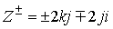
.Причем модуль комплекса 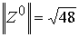действителен и поэтому это направление фактически является гравитационным. Модуль комплекса 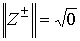, поэтому комплекс связан с полевой составляющей. Добавление заряженного комплекса к нейтральному изменяет модуль нейтрального комплекса. Действительный модуль, как это неоднократно было показано, адекватен массе частице или энергии глюонного поля.
Все нейтральные мезоны представляют нейтральную комбинацию от 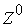
.|
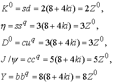 |
(8.9) |
Система (8.9) может быть продолжена с предсказанием нейтральных мезонов больших масс.
Заряженные мезоны представляют сумму комбинаций нейтральных мезонов плюс заряженное направление, например
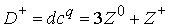,
|
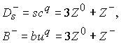 |
(8.10) |
Система (8,10) также имеет предсказательную силу.
Распад мезонов фактически есть распад по направлениям 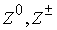
.Нейтральные барионы представляют линейную комбинацию из нейтрального мезона плюс нейтрон
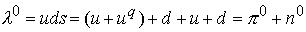, а также
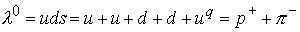.
В точном соответствии с модами распада, установленными экспериментальным путем. Таким образом, введение линейной комбинации S кварка подтверждено модой распада 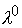- гиперона.
Аналогично имеем дело с сигма гипероном и другими частицами.
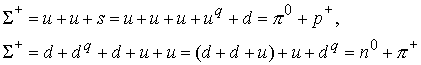
Во второй моде распада кварк S представлен равнозначной комбинацией 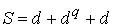
.Также в точном соответствии с модами распада приведем еще ряд примеров
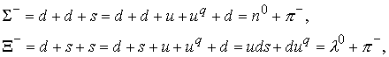
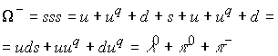
Также в точном соответствии с экспериментальными модами распада. Из этого следует вывод: кварки S, C, b, t не могут претендовать на фундаментальные предельные фундаментальные частицы, так как доказана что их кварковая комбинация является линейной комбинацией первых двух кварков u, d.
Протон 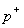представляет комбинацию из u и d кварка.
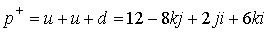,
нейтрон
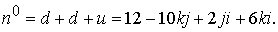
Комбинация направлений нейтрона состоит из комбинаций протона и заряженного направления 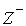
.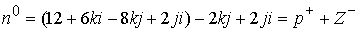.
Таким образом, линейно независимой кварковой комбинацией можно считать протон.
Структуры микрочастиц представляют линейные комбинации из суммы произведений весовых коэффициентов на единичные зарядовые направления. Если выбрать систему из четырех независимых выражений глюонного поля микрочастиц, то можно определить энергетический вклад каждого из единичных направлений, иными словами определить пространственную энергетическую единичную решетку (взамен пространственно временной). Весовые коэффициенты вызывают искривление этой пространственной энергетической решетки, которые и определяют микрочастицу. Классификация микрочастиц как результат экспериментальных каналов распада дает возможность составить систему из четырех линейных независимых уравнений. В этом случае решение системы четырех независимых линейных уравнений (каждое из которых характеризует фундаментальную частицу) дает единичную глюонную решетку, а глюонное поле любой микрочастицы определяется суммой деформаций этой решетки, вызванной весовыми
коэффициентами.Поэтому в дальнейшем введем обозначения направлений комплексного пространства
|
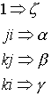 |
(8.11) |
которые отвечают за энергетический вклад в глюонное поле микрочастицы. Глюонное поле протона определено в виде
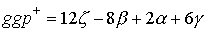
где 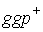рассчитывается по формуле (8.4).
Для определения четырех коэффициентов необходимо составить систему из четырех линейно независимых уравнений, каждое из которых должно определять глюонное поле частицы. Определитель системы не должен быть равным нулю. Составим систему из весовых коэффициентов стабильных частиц, которыми являются протон, электрон.
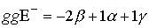
Возьмем также за основу расчета структуру лямбда-гиперона и положительного пиона.
Глюонное поле  -гиперона дает уравнение (как связь между барионами и мезонами).
-гиперона дает уравнение (как связь между барионами и мезонами).
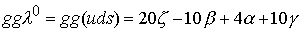
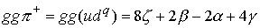
Глюонное поле положительного пиона рассчитываем исходя из массы пиона 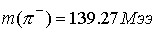
.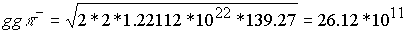Мэв.
Глюонное поле 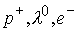соответственно равны
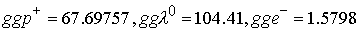
Таким образом, составлена система для определения составляющих глюонных полей по направлениям в комплексном пространстве.
|
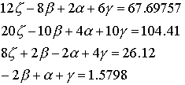 |
(8.12) |
Коэффициент 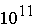опущен, так как он легко учитывается в дальнейших расчетах. Все расчеты сведены и проведены в таблице N.
Решение дает энергетический вклад направлений в общее глюонное поле. Это единичные коэффициенты глюонного поля - энергетическая решетка.
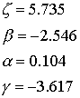
Значение коэффициентов является приближением к коэффициентам для всего глюонного поля микрочастиц. Эти коэффициенты рассчитаны для системы, в которой две структуры являются нестабильными и поэтому не учитывается энергия реакции образования и распада. Система кварковых комбинаций микрочастиц дает коэффициенты перед каждым значением 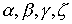, которые в конечном счете определяют искривление пространственных направлений и тем самым определяется прогиб пространства для каждой микрочастицы. Если полученные из решения коэффициенты принять как единичные меры (если можно так выразиться для ясности) прогиба по каждому пространственному направлению, то результаты расчета масс микрочастиц нестабильных необходимо корректировать по энергии распада и образования, путем варьирования весовых коэффициентов, рассчитанных по кварковому классификатору. Разница в структуре весовых коэффициентов даст энергию моды распада. Микрочастицы одной и той же кварковой комбинации имеют в большинстве случаев разные энергетические массы и разные характеристики: спин, четность, изоспини так далее, поэтому разница величин весовых коэффициентов определяет не только не учтенную энергию распада но также энергию глюонного поля которая определяет внутреннюю структуру микрочастицы для разных квантовых характеристик.
Мини оглавление:
[0], [1.1.1, 1.1.2, 1.1.3, 1.1.4, 1.1.5, 1.1.6, 1.1.7, 1.1.8, 1.2, 1.2.1, 1.2.2, 1.2.2.a, 1.2.2.b, 1.2.2.c, 1.2.2.d, 1.2.2.e, 1.2.2.f, 1.2.2.g, 1.2.2.h, 1.2.3, 1.3.1, 1.3.2, 1.3.3, 1.3.4, 1.3.5, 1.3.6, 1.4.1, 1.4.2, 1.5, 1.6, 1.7.1, 1.7.2, 1.7.3.1, 1.7.3.2, 1.7.3.3, 1.7.4.1, 1.7.4.2, 1.8.1], [2.1, 2.2],[3.1, 3.2, 3.3, 3.4.1, 3.4.2, 3.4.3, 3.4.4, 3.4.5],[4.1, 4.2, 4.3, 4.4],[5.1, 5.1.Рис.52, 5.2, 5.3, 5.4, 5.4.Т1, 5.4.Т2, 5.4.Т3, 5.5.1, 5.5.2, 5.5.3, 5.5.4],[6.1.1, 6.1.2, 6.2.1, 6.2.2, 6.2.3, 6.2.4, 6.2.5, 6.3, 6.4.1, 6.4.2, 6.5.1, 6.5.2],[7.1, 7.2, 7.3, 7.4, 7.5, 7.6, 7.7.1, 7.7.2, 7.8.1, 7.8.2, 7.8.3, 7.9],[8.1, 8.2.1, 8.2.2, 8.3, 8.4, 8.5, 8.6, 8.6.T1, 8.7, 8.8.1, 8.8.2, 8.8.3, 8.9.1, 8.9.2, 8.9.3, 8.10, 8.10.T2, 8.10.T3],[9.1, 9.2, 9.3, Рис.88, 89, 90, 91, 92, 93, 94, 95, 96, 97, 98, 99, 100],[10.1, 10.2, 10.3, 10.4, 10.5, 10.6, 10.7, 10.8, 10.9, 10.10, 10.11, 10.12, 10.13, 10.14, 10.15.1, 10.15.2, 10.16.1, 10.16.2, 10.17, 10.18],[11]
Размещенный материал является электронной версией книги: © В.И.Елисеев, "Введение в методы теории функций пространственного комплексного переменного", изданной Центром научно-технического творчества молодежи Алгоритм. - М.:, НИАТ. - 1990. Шифр Д7-90/83308. в каталоге Государственной публичной научно-технической библиотеки. Сайт действует с 10 августа 1998.
E-mail: mathsru@gmail.com